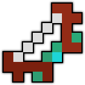
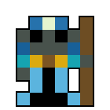
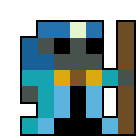
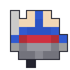

Deca Art Contest 2018
Please see attached my DECA Art Contest 2018 submissions.
Item
Scavengers see a glow in the dark. A strange wood that whispers when touched. Hoping to profit they sell the wood to a bowyer. How you found it where you did is a mystery...
When I set out to create this bow it was originally two pieces of wood twisted together. However due to that not having the "UT" feeling, and because the sprite looked "noisy" the idea evolved. It evolved into that of a magical, glowing, material bound to a string by wooden fasteners.
Enemy
| Stand | Walk | Attack (16x8) |
|---|---|---|
|  | ||
|  | ||
One day a powerful mage was traveling. He entered a cavern when a storm struck, he found a room of tresure. A single blue helmet, he placed upon his head. The gem on the helmet flashed, his mind became bent, and his flesh decayed away...
Originally this character was going to be one of mystery, with very little of his face showing. But I found the more of the skintone I added the more the skin began to make sense. I came to a final design quite quickly, and spent the majority of the time tuning the animations, especially that of the side-attack view and of the robe walking.
XML
Early on, almost as soon as I added the gem I decided that I would really like to have the gem on the enemy represent its state. Luckily this can be done with the setAltTexture behaviour. I am unsure how this would work for an enemy with attacking and walking animations, however. You can see the revelevant XML to make the gifs above, pasted below.
...
<State id="gem-green">
<Behavior altTextureId="1">SetAltTexture</Behavior>
<Transition afterTime="0.6">gem-red</Transition>
</State>
<State id="gem-red">
<Behavior altTextureId="2">SetAltTexture</Behavior>
<Transition afterTime="0.6">gem-purple</Transition>
</State>
<State id="gem-purple">
<Behavior altTextureId="3">SetAltTexture</Behavior>
<Transition afterTime="0.6">gem-blue</Transition>
</State>
<State id="gem-blue">
<Behavior altTextureId="4">SetAltTexture</Behavior>
<Transition afterTime="0.6">gem-green</Transition>
</State>
...
The Magnetic Warrior
| Stand | Walk | Attack (16x8) |
|---|---|---|
|  |
A being cursed to be without body. Only the power of magnetism hold him together.
Everybody has played with, or at least heard of magnets before. Magnets can make some cool tricks possible and there is no exception to this in spriting. I chose to use magnets since it allowed me to make interesting animations, something which I find adds a lot of overall value to the skin. The animations are based mainly on the default warrior skin.